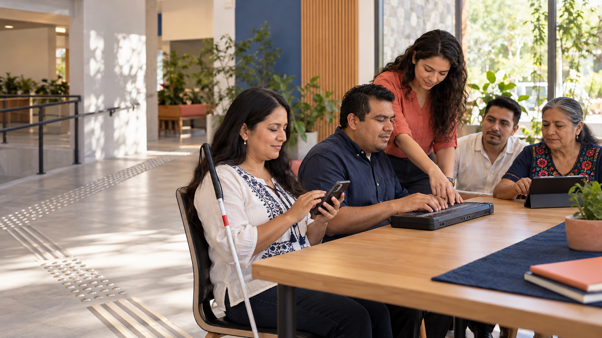

Orientación y movilidad
Entrenamiento personalizado con bastón blanco para desplazarse con seguridad y confianza.
126 participantes
Inclusión que se puede tocar
Acompañamos a personas ciegas y con baja visión con formación, tecnología accesible y redes que transforman oportunidades en independencia.
Cada donativo se convierte en acciones medibles y transparentes.
Lo que hacemos
Entrenamiento personalizado con bastón blanco para desplazarse con seguridad y confianza.
126 participantesLectoescritura, organización del hogar y habilidades prácticas para una vida más independiente.
980 horas impartidasLectores de pantalla, teléfonos y herramientas digitales para estudiar, trabajar y comunicarse.
87 equipos configuradosTu donativo en acción
Publicamos cómo distribuimos los recursos y qué resultados logramos. En el ejercicio ilustrativo 2025, 82 de cada 100 pesos llegaron directamente a programas.
“Ahora puedo moverme sola hasta mi trabajo. No es sólo aprender una ruta: es recuperar decisiones.”— Marisol, participante del programa de movilidad
Historias de autonomía
El acompañamiento adecuado no decide por nadie: acerca herramientas para que cada persona construya su propio camino.
Conoce nuestro enfoque →Haz equipo con nosotros
Dona, ofrece tu tiempo o crea una alianza.